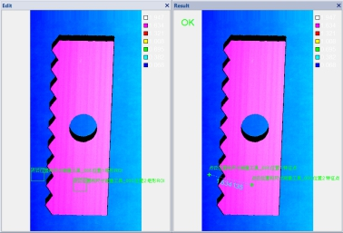
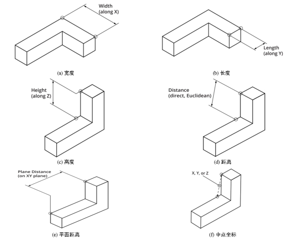

在3D测量中，往往需要对深度图像中两个检测区域内深度数据的特征点进行定位，并对这两个特征点之间的尺寸信息进行测量，图1所示为两个检测区域内均值特征点之间的高度距离信息。

| 分类 | 参数名称 | 参数描述 |
|---|---|---|
| 属性窗口 | 位置1 特征点模式 | 包括检测和引用两种，可以实时检测或者引用其他工具的特征点作为输入。 |
| 位置1 ROI生成方式 | 包括：定位、固定ROI、参考点三种模式，参考点模式会根据数据链接中的参考点和参考直线建立产品坐标系。 | |
| X固定偏移量 | 在参考点模式下，在建立的产品坐标系中ROI参考位置坐标X，单位：mm。 | |
| Y固定偏移量 | 在参考点模式下，在建立的产品坐标系中ROI参考位置坐标Y，单位：mm。 | |
| 位置1 ROI类型 | 第1个检测区域，分为3种：整幅图像、矩形、仿射矩形。 | |
| 位置1 特征类型 | 根据深度数据特征类型获取特征点1三维坐标信息。 |
|
| 位置1区间上、下限 | 测量区域的深度数据按照Z分量从小到大排序，然后再获取位于start% ~ end%的深度数据的均值，中值等特征点。取值范围为下限[0,100)，上限(0,100]，且下限小于上限。 | |
| 位置2 特征点模式 | 包括检测和引用两种，可以实时检测或者引用其他工具的特征点作为输入。 | |
| 位置2 ROI生成方式 | 包括：定位、固定ROI、参考点三种模式，参考点模式会根据数据链接中的参考点和参考直线建立产品坐标系。 | |
| X固定偏移量 | 在参考点模式下，在建立的产品坐标系中ROI参考位置坐标X，单位：mm。 | |
| Y固定偏移量 | 在参考点模式下，在建立的产品坐标系中ROI参考位置坐标Y，单位：mm。 | |
| 位置2 ROI类型 | 第2个检测区域，分为3种：整幅图像、矩形、仿射矩形。 | |
| 位置2 特征类型 | 根据深度数据特征类型获取特征点2三维坐标信息。 | |
| 尺寸 特征类型 | 深度数据的尺寸类型，以便计算两个特征点的距离或中点，分为6种：宽度、长度、高度、欧氏距离、平面距离、中点。 |
|
| 系数补偿 | 测量结果系数补偿，一般为1，用于补偿成像等系统误差。 | |
| 固定补偿 | 测量结果固定补偿，一般为0，用于补偿成像等系统误差。 | |
| 阈值范围下限 | 判定条件的下限值，取值范围：[-100000,100000]，单位：mm。 | |
| 阈值范围上限 | 判定条件的上限值，取值范围：[-100000,100000]，单位：mm。 | |
| 图像窗口 | 深度图像 | 显示待检测的深度图像，显示为伪彩色图像。 |
| 检测区域 | 在图像上显示位置1和位置2的检测区域。 | |
| 数据链 | 输入深度图像 | 输入待检测的深度图像。 |
| 二维线性变换 | 目标相对于模板的平移、旋转、缩放变换。 | |
| 参考点 | 以此点建立产品坐标系的原点。 | |
| 参考直线 | 当直线角度趋向于水平时，则该直线作为X轴，否则为Y轴。 | |
| 像素当量 | 建立产品坐标系时，即属性中的X固定偏移、Y中的固定偏移以此反推出图像距离，单位：mm/pixel。 | |
| 高级界面 | 无 | 无 |
| 分类 | 参数名称 | 参数描述 |
|---|---|---|
| 监视窗口 | 输入深度图像 | 输入图像的长宽和像素大小，以及深度数据参数。 |
| 位置1 | 第1个检测区域内特征点的三维坐标信息。 | |
| 位置2 | 第2个检测区域内特征点的三维坐标信息。 | |
| 尺寸结果 | 两个特征点间的宽度/长度/高度/欧氏距离/平面距离/中点。 | |
| 执行结果 | 工具执行结果。 | |
| 执行时间 | 工具执行时间。 | |
| 图像窗口 | 输入深度图像 | 显示检测的深度图像，显示为伪彩色图像。 |
| 特征点、距离/中点 | 显示特征点结果，及两个特征点间的距离或中点。 | |
| 数据链 | 图像 | 同监视窗口参数，供后续工具使用。 |
Step 1 设置检测区域和深度数据特征类型
为了获取深度数据中的特征点三维坐标信息，需要设置检测区域和深度数据特征类型。其中，检测区域有3种：整幅图像、矩形，仿射矩形，而深度数据特征类型有9种：均值、中值、质心、X最大、X最小、Y最大、Y最小、Z最大、Z最小。
均值：检测区域内所有深度数据坐标（X,Y,Z）的均值。
中值：检测区域内所有深度数据坐标（X,Y,Z）的中值。
质心：检测区域内所有深度数据坐标（X,Y,Z）的质心。
X最大值：检测区域内所有深度数据坐标（X,Y,Z）中X坐标最大所对应的深度数据的坐标信息。
X最小值：检测区域内所有深度数据坐标（X,Y,Z）中X坐标最小所对应的深度数据的坐标信息。
Y最大值：检测区域内所有深度数据坐标（X,Y,Z）中Y坐标最大所对应的深度数据的坐标信息。
Y最小值：检测区域内所有深度数据坐标（X,Y,Z）中Y坐标最小所对应的深度数据的坐标信息。
Z最大值：检测区域内所有深度数据坐标（X,Y,Z）中Z坐标最大所对应的深度数据的坐标信息。
Z最小值：检测区域内所有深度数据坐标（X,Y,Z）中Z坐标最小所对应的深度数据的坐标信息。
Step 2 设置深度数据尺寸类型
为了获取深度数据特征点之间的距离或者中点坐标信息，需要设置深度数据的尺寸类型。深度数据的尺寸类型有6种：宽度、长度、高度、欧式距离、平面距离、中点，如图2所示。

Step 3 执行测量和输出结果
在设置好检测区域，深度数据特征类型以及深度数据尺寸类型之后，就可以执行测量了。输出的结果包括，两个特征点的三维坐标信息，两个特征点之间的尺寸信息或者其中点坐标信息。
无
参见“\Samples\3D\深度图\3D测量工具.gvp”。